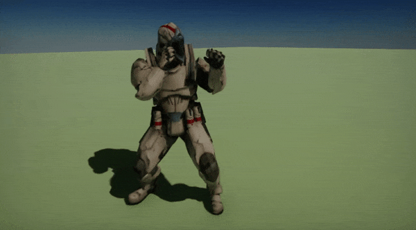
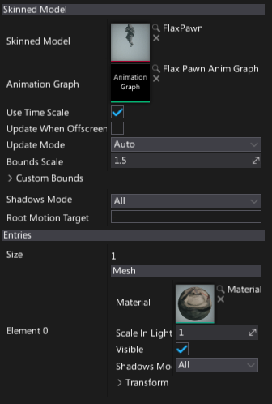

Animated Model

Animated Model is an actor type that performs an animation and renders a skinned model. It uses an animation graph instance to evaluate the skinned model bone transformations.
Before you can use animated model in your game you will need to import a Skinned Model and create an Anim Graph.
Usage
To learn how to setup and use the animated model please see the dedicated tutorials: How to setup animated model and How to change Anim Graph parameter from code.
Scripting
Animated Model actor exposes a rich C# scripting API. You can modify the anim graph instanced parameters values via AnimatedModel.Parameters, modify rendered model meshes materials via AnimatedModel.Entries, gather the current skeleton bones pose via AnimatedModel.GetCurrentPose, or even manually update animation via AnimatedModel.UpdateAnimation.
Properties

| Property | Description | ||||||||||||||
|---|---|---|---|---|---|---|---|---|---|---|---|---|---|---|---|
| Skinned Model | Skinned model asset used for rendering. | ||||||||||||||
| Animation Graph | Animation graph used for the skinned mesh skeleton bones evaluation. | ||||||||||||||
| Per Bone Motion Blur | If checked, use per-bone motion blur on this skeletal model. It requires additional rendering, can be disabled to save performance. | ||||||||||||||
| Use Time Scale | If checked, animation speed will be affected by the global time scale parameter. | ||||||||||||||
| Update When Offscreen | If checked, the animation will be updated even when an actor cannot be seen by any camera. Otherwise, the animations themselves will also stop running when the actor is off - screen. | ||||||||||||||
| Update Mode | The animation update mode. Can be used to optimize the performance. Possible options:
|
||||||||||||||
| Bounds Scale | Master scale parameter for the actor bounding box. Helps reducing mesh flickering effect on screen edges. | ||||||||||||||
| Custom Bounds | Custom bounds (in actor local space). If set to empty bounds then source skinned model bind pose bounds will be used. | ||||||||||||||
| Shadows Mode | Shadows casting mode by meshes using this entry. Possible options:
|
||||||||||||||
| Root Motion Target | Animation root motion apply target. If not specified the animated model will apply it itself. |